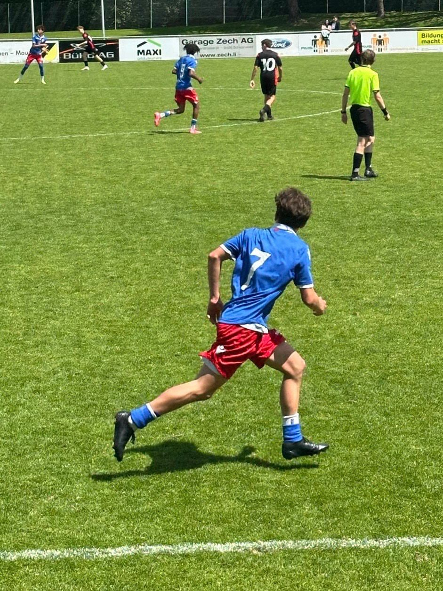
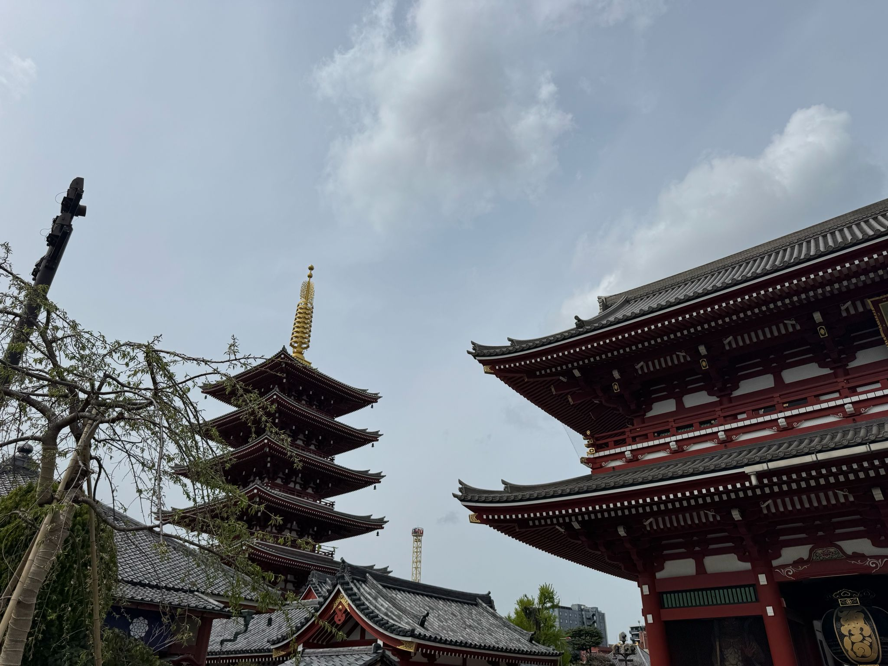
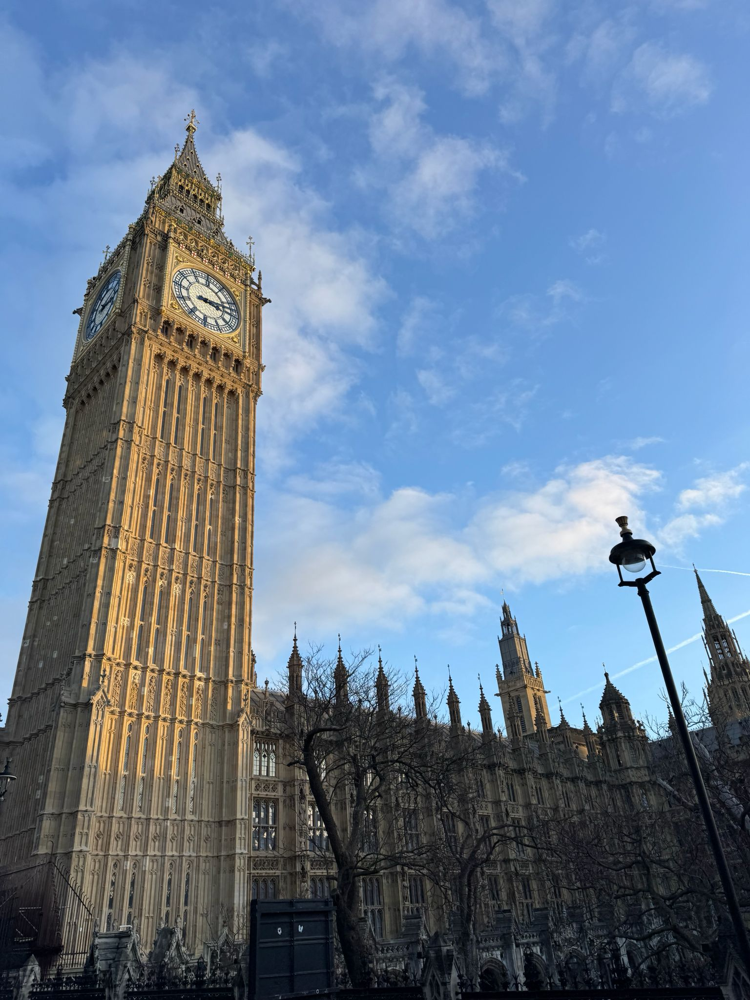

Hi, I'm Sergiu.
I'm doing a dual apprenticeship as an IT specialist (EFZ) in application development and attend vocational baccalaureate school alongside it. I'm curious and I stick with a problem until it works. In a team I like to bring my own ideas and pick up how others solve things.
What I like about programming is that an idea turns into something you can launch and use. I enjoy hunting down a bug until I understand where it comes from.
Hobbies


Travel
I like to travel and see how people live in other countries.



- Barcelona: The Sagrada Família, Camp Nou and FC Barça.
- Next destination: a safari in Africa to see lions, elephants and giraffes in the wild.
CV
My CV
Open PDF